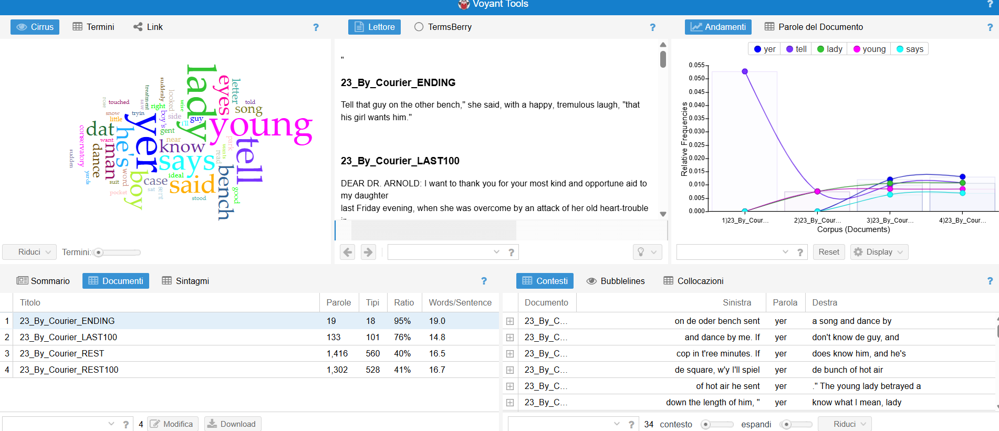

Method
Corpus
The corpus consists of all 25 stories of The Four Million, taken from Project Gutenberg (no. 2776), where the text is in the public domain. Each story is saved as a separate plain-text file, without its title and the licence text. The corpus is small and every story has been read in full: it is smart data, not big data.
Definitions
Four terms were fixed before the analysis.
The final passage is the last paragraph of a story; as a robustness check, the last whole paragraphs that together reach at least 100 words are also measured.
Voice describes whether an ending is dialogue, narration or mixed, or quoted text, such as a newspaper item, a line of a menu or a note. Mixed endings are counted separately.
Shorter means shorter than the other paragraphs of the same story, not than the story as a whole.
Twist is judged by three tests:
- Reversal of expectations: the ending contradicts what the reader expected.
- Reinterpretation: the ending changes the meaning of events that came before.
- Withheld information: the ending reveals a fact that the story had kept hidden.
A story has a twist when it passes at least two tests. One borderline story, “The Cop and the Anthem,” passes only the first test, but the reversal is so clear that it is counted as a twist and marked as borderline in the data.
Unlike the word counts, the coding of the twist is an interpretation. It records what the researcher takes from the text, so in Drucker’s terms it is capta and not data.
Hypotheses
The project tests three hypotheses, which can be disproved.
- The final passage is shorter than the other passages of the same story.
- Sentences in the final passage are shorter on average.
- In most stories the ending is dialogue, not narration.
Tools and procedure
Each story is divided into four documents in Voyant Tools: the ending, the rest, and, as a robustness check, the last whole paragraphs with at least 100 words (LAST100) and the remaining part of the story (REST100). The window never cuts a paragraph, so it can be longer than 100 words. The Summary and Documents tools give the word count and the average sentence length, which are recorded in Google Sheets (view only); a measure that Voyant does not offer is calculated by hand.
Words are counted between spaces. Voyant counts the parts of a hyphenated word separately, so its totals are a little higher: “By Courier” has 1,415 words here and 1,435 in Voyant.
Voyant cannot tell narration from speech, so the voice of each ending is coded manually, twice, one week apart, and any discrepancy is re-examined. Because dialogue tends to produce short sentences, sentence length is measured separately for dialogue endings and narration endings, so that this effect does not distort the result.
Finally, three or four stories are read closely, including at least one counterexample.
